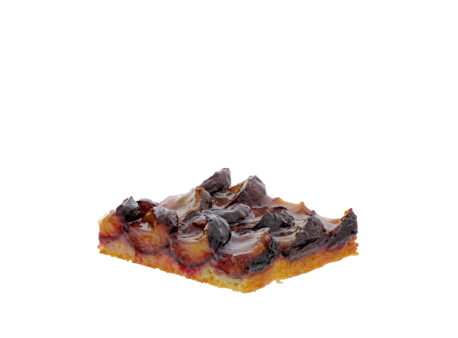

Pflaumenkuchen
- 800 g Pflaumen
- 125 g Weizenmehl
- 1 gestr. TL Dr. Oetker Original Backin
- 125 g Zucker
- 1 Pck. Dr. Oetker Vanillin-Zucker
- 1 Pck. Dr. Oetker Finesse Geriebene Zitronenschale
- 125 g weiche Butter oder Margarine
- 2 Eier (Größe M)
- 150 g Weizenmehl
- 100 g Zucker
- 1 Msp. gemahlener Zimt
- 100 g weiche Butter
